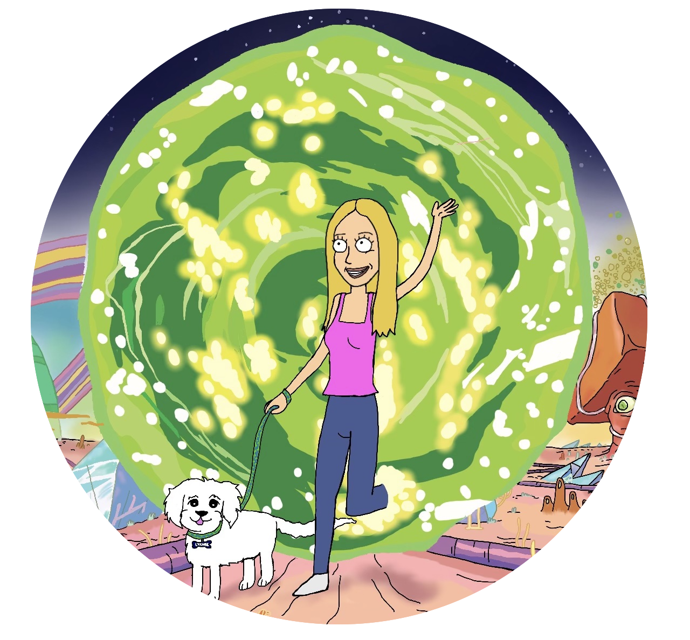

∀b⊝∪⊤ M∈
Hi! My name is Yael and I am a determined self-starter, passionate about problem-solving and learning from new experiences. I am expected to graduate with a BSc, Honours Specialization in CS at the University of Western Ontario in Spring 2024!∫⊂h∅⊕∟
P®0√∃⊂⊤ς
University of Western Ontario
Personal Website
Degree: BSc, Honours Specialization in Computer Science
Thesis Project (ongoing)
Expected Graduation: Spring 2024
GPA: 3.94/4.0Awards:
Relevant coursework: Object-Oriented Design, Data Structures & Algorithms, Databases, Machine Learning, Artificial Intelligence
Personal Interests: Yoga, linguistics, music, reading
∑𝑥ρεℝⅈε∩©ε
Powtoon
Summer 2023
SWE Intern
Unboxable
Summer 2022
SWE Intern
Royal Bank of Canada
Summer 2021
Technical System Analyst